|
4-2-3-1
|
Switzerland | 2 | - | 1 | Canada |
4-4-2
|
| HT 0-0 | ||||||
|
FIFA World CupWednesday 24 June 2026
|
||||||
- Venue
- BC Place Vancouver
- Attendance
- 52,497
- Referee
- Ramon Abatti
Yellow card32'
G. Xhaka
Goal46'
R. Vargas
Assist: J. Manzambi
Goal57'
J. Manzambi
Assist: B. Embolo
- 2
Substitution74'
D. Sow
M. Aebischer
L. Jaquez
S. Widmer
Substitution80'
R. Vargas
D. Ndoye
- 2
Substitution85'
J. Manzambi
C. Fassnacht
B. Embolo
C. Itten
Whistle45+4'
45+4'
Yellow card32'
C. Larin
- 3
Substitution58'
M. Choinière
S. Eustaquio
C. Larin
T. Oluwaseyi
A. Ahmed
L. Millar
Substitution74'
T. Buchanan
P. David
Goal76'
P. David
Assist: N. Saliba
Substitution83'
R. Laryea
J. Shaffelburg
Yellow card87'
L. Millar
Switzerland | |
|---|---|
Goalkeeper | |
| 1 | G. Kobel |
Defender | |
| 4 | N. Elvedi |
| 5 | M. Akanji |
| 13 | R. Rodríguez |
| 25 | L. Jaquez 74' |
Midfielder | |
| 8 | R. Freuler |
| 9 | J. Manzambi 57'85' |
| 10 | G. Xhaka 32' |
| 15 | D. Sow 74' |
| 17 | R. Vargas 46'80' |
Forward | |
| 7 | B. Embolo 85' |
Substitutes | |
| 3 | S. Widmer 74' |
| 11 | D. Ndoye 80' |
| 16 | C. Fassnacht 85' |
| 20 | M. Aebischer 74' |
| 26 | C. Itten 85' |
Canada | |
Goalkeeper | |
| 16 | M. Crépeau |
Defender | |
| 2 | A. Johnston |
| 4 | L. De Fougerolles |
| 13 | D. Cornelius |
| 22 | R. Laryea 83' |
Midfielder | |
| 6 | M. Choinière 58' |
| 17 | T. Buchanan 74' |
| 20 | A. Ahmed 58' |
| 25 | N. Saliba |
Forward | |
| 9 | C. Larin 32'58' |
| 10 | J. David |
Substitutes | |
| 7 | S. Eustaquio 58' |
| 11 | L. Millar 58'87' |
| 12 | T. Oluwaseyi 58' |
| 14 | J. Shaffelburg 83' |
| 24 | P. David 74'76' |


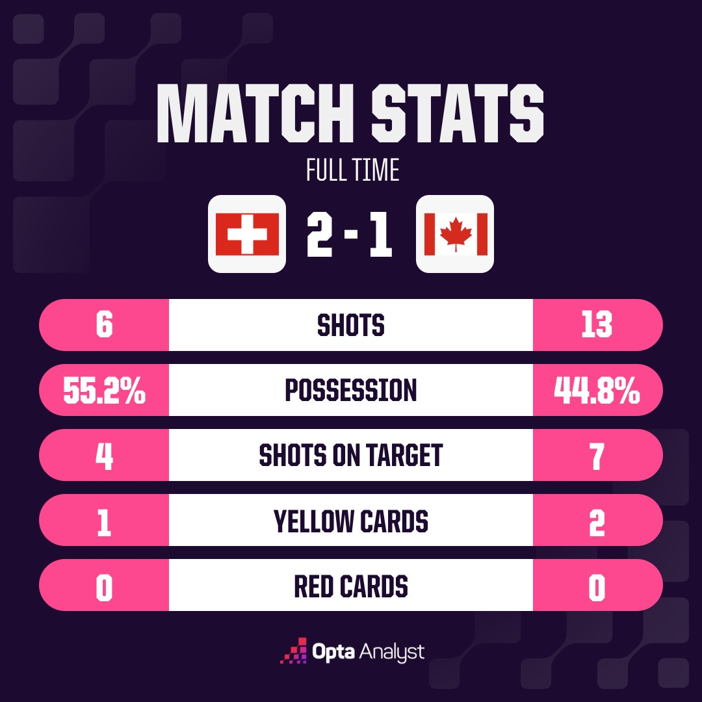
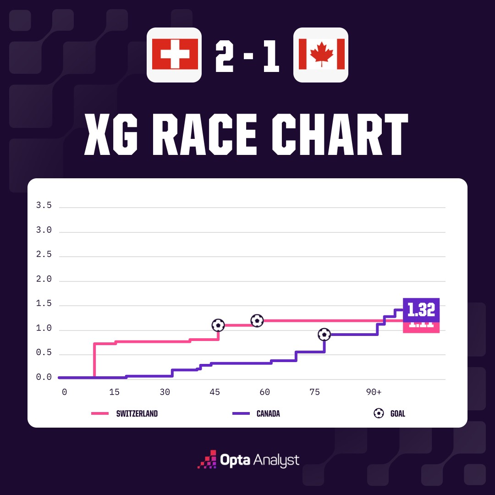
98'
Switzerland attempted 6 shots in this game, their lowest total in a single match in the 2026 FIFA World Cup.
98'
Switzerland are undefeated in their last 3 games in the FIFA World Cup, their last joint longest unbeaten streak was from 17th June 2018 to 27th June 2018.
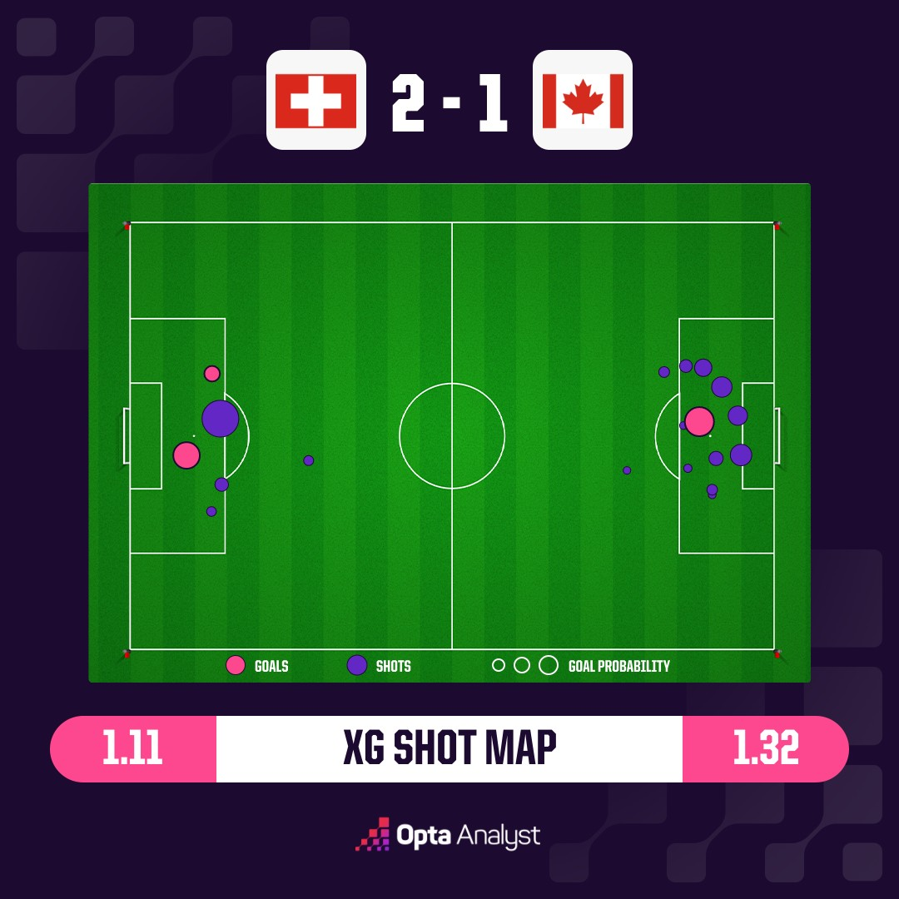
90+7'
FULL-TIME! The referee sounds the final whistle, and it’s all over. Switzerland get the win, with a 2-1 triumph over Canada.
90+6'
Free-kick! A foul from Derek Cornelius on Gregor Kobel. It is well away from Canada’s goal, so it is unlikely to result in a chance for Switzerland.
90+6'
SHOT! Promise David manages to get a shot off from inside the area, but although it was heading in, they cannot get enough on it to beat Gregor Kobel, who makes the save.
90+6'
WHAT A MISS! Oh dear, oh dear, that is an awful attempt from Alistair Johnston, as a huge chance for Canada to score the goal they need goes begging. What a let off for Switzerland, though. They will have to defend better than that from here on out!
90+6'
Gregor Kobel has made 5 saves, his highest total in a single match in the FIFA World Cup.
90+3'
SHOT! Promise David manages to get a shot off from inside the area, but although it was heading in, they cannot get enough on it to beat Gregor Kobel, who makes the save.
90+2'
It’s backs to the wall now — Switzerland throwing everything into defending their advantage, with a flurry of crucial interventions.
90+1'
WHAT A MISS! Oh dear, oh dear, that is an awful attempt from Derek Cornelius, as a huge chance for Canada to score the goal they need goes begging. What a let off for Switzerland, though. They will have to defend better than that from here on out!
90+1'
Canada have attempted the last 5 shots in this game, Switzerland last shot was taken by Johan Manzambi in the 57th minute.
89'
A barrage of deliveries from Canada, who are pushing hard to force the equaliser.
89'
A rash challenge from Michel Aebischer, who sends Jonathan David tumbling, giving Canada a free-kick. It is not in a threatening position, but it gives them a chance to get back on the ball.
89'
Free-kick! A foul from Cedric Itten on Luc De Fougerolles. It is well away from Switzerland’s goal, so it is unlikely to result in a chance for Canada.
88'
A rash challenge from Ricardo Rodríguez, who sends Liam Millar tumbling, giving Canada a free-kick. It is not in a threatening position, but it gives them a chance to get back on the ball.
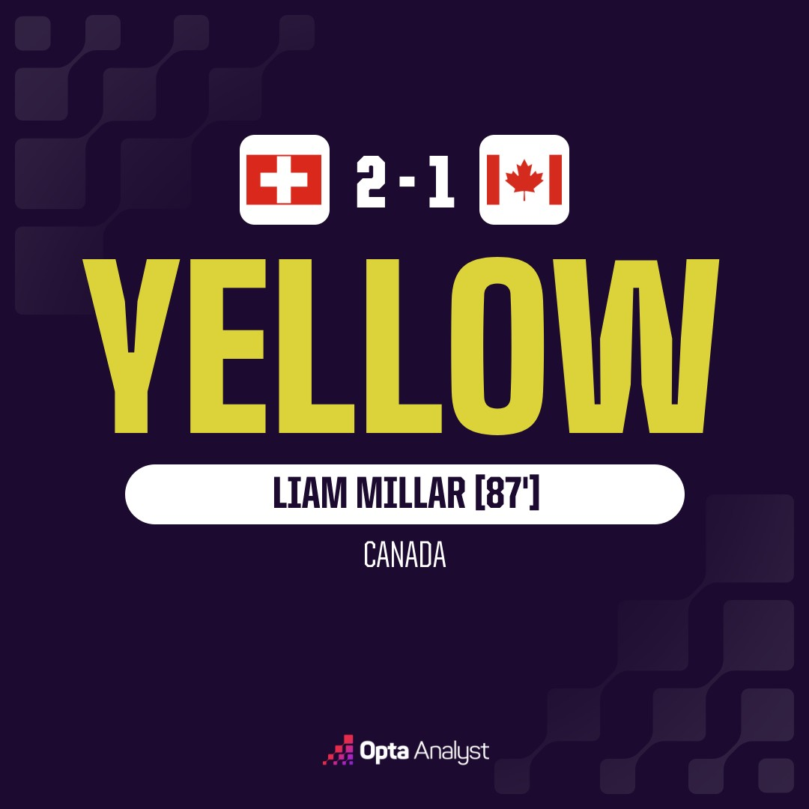
87'
A yellow card for Canada's Liam Millar. They will have to walk a tightrope for the rest of this match, and Switzerland will likely look to target them and draw a second bookable offence.
87'
Liam Millar goes in on Dan Ndoye and concedes a foul. The free-kick is not in a particularly dangerous area from Canada’s viewpoint, though.
87'
A chance now for Canada to get a good delivery into the box, after the ball is diverted behind for a corner. Canada have been pushing for what would be a key goal, but Switzerland have stood firm so far.
87'
It's all hands on deck for Switzerland as they defend their lead, making a wave of critical blocks and clearances
87'
It has been 30 minutes since Switzerland last attempted a shot in this game.
86'
No goalmouth action for some time now, with neither team having had a shot in the past 10 minutes. Will there be a moment that changes things soon? Canada have seen plenty of the ball, however, with 58 per cent of the possession in their favour during that period.
86'
Still behind, but Canada are refusing to roll over - defensive urgency rising as they fend off more pressure and push for a late turnaround.
85'
Breel Embolo’s match is over as Switzerland decide to make a substitution. Cedric Itten enters the field in what looks like a tactical change.
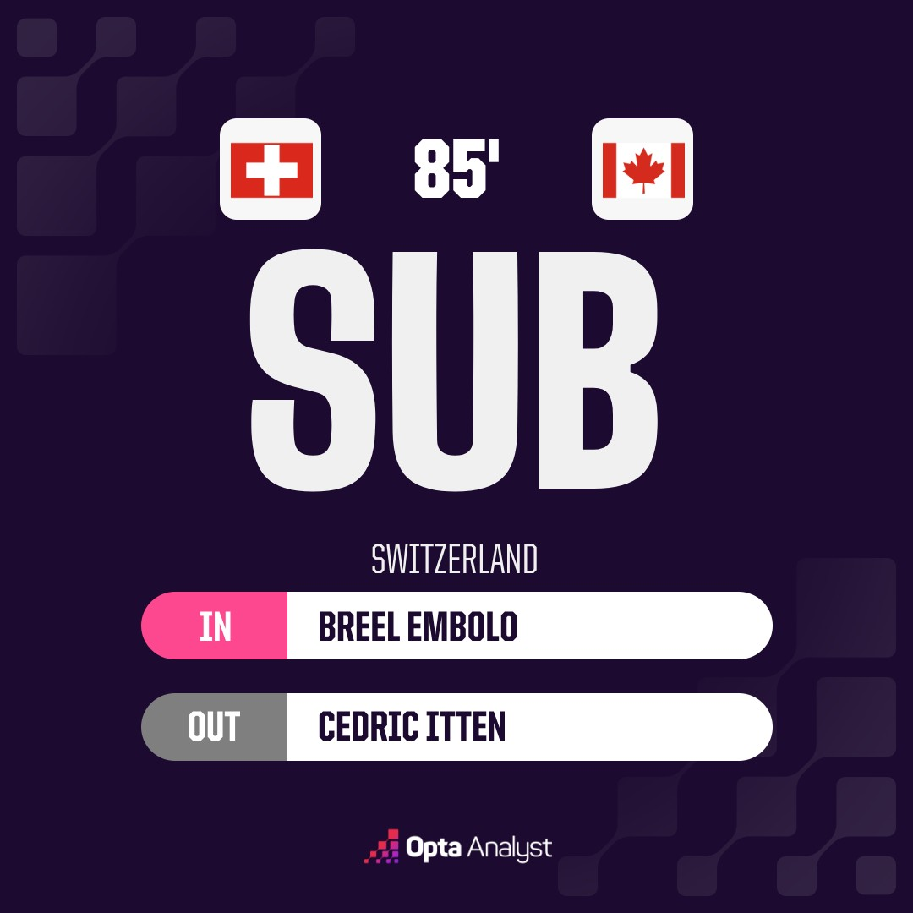
85'
The Switzerland manager is looking to the substitutes’ bench, bringing on Christian Fassnacht in place of Johan Manzambi. Will the change make a difference? Let’s find out!
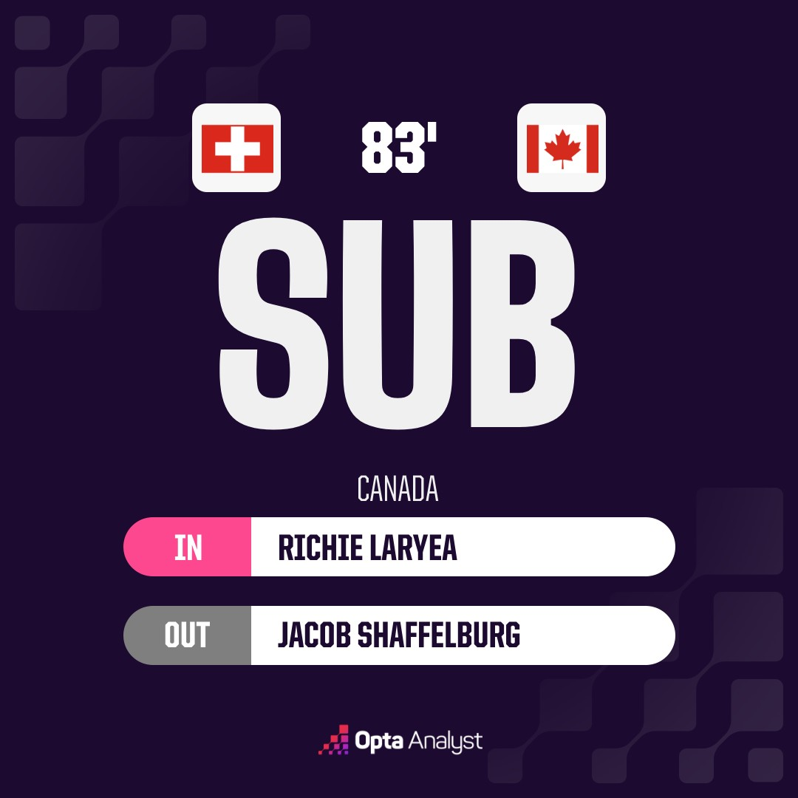
83'
Substitution! Jacob Shaffelburg replaces Richie Laryea for Canada as the manager shuffles the pack. Can Jacob Shaffelburg make an impression as this match continues?
83'
Can Switzerland make this chance count? They have won a free-kick in a threatening position after a foul from Luc De Fougerolles on Breel Embolo. Will Canada's defence be tested here?
81'
It’s backs to the wall now — Switzerland throwing everything into defending their advantage, with a flurry of crucial interventions.
80'
Nathan Saliba goes in on Dan Ndoye and concedes a foul. The free-kick is not in a particularly dangerous area from Canada’s viewpoint, though.
80'
A substitution for Switzerland sees Rubén Vargas replaced by Dan Ndoye. There does not appear to be any obvious sign of an injury, so that is a tactical switch.
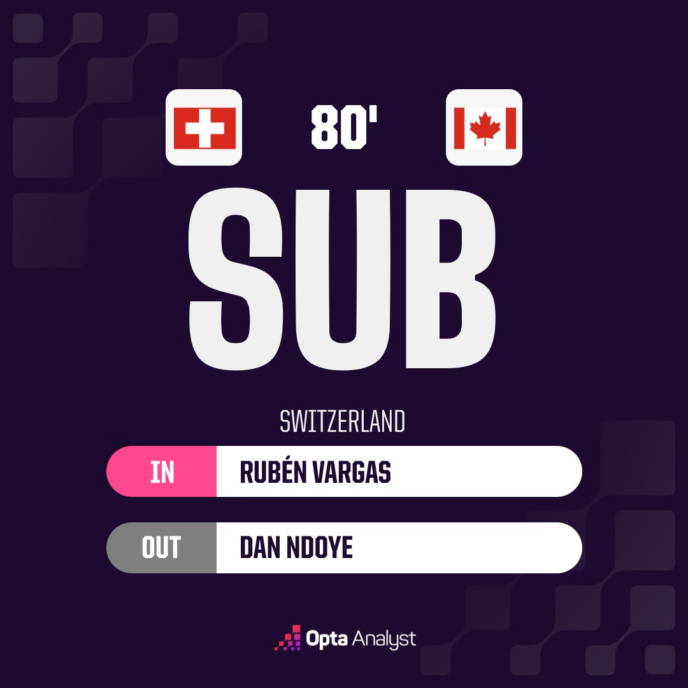
79'
Alistair Johnston goes in on Remo Freuler and concedes a foul. The free-kick is not in a particularly dangerous area from Canada’s viewpoint, though.
78'
Foul! A free-kick now in a dangerous area for Canada, after Jonathan David is fouled by Michel Aebischer. Can Canada make the most of this opportunity?
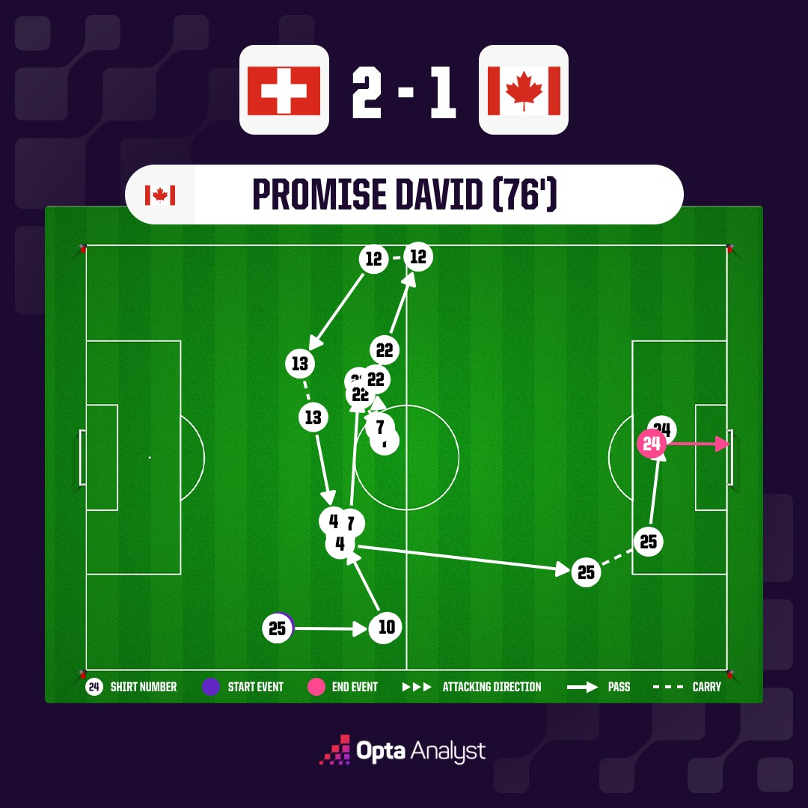
76'
Nathan Saliba has assisted his second goal in the 2026 FIFA World Cup.
76'
Promise David has scored his first goal in the 2026 FIFA World Cup.
76'
GOAL! Game on! Promise David has scored for Canada and suddenly, after being well behind, they are right back in this contest. Could they go on to find an equaliser now?
76'
There are 15 minutes plus added time to go in this match. Switzerland have had more of the ball so far with a possession figure of 56.93%, while Canada have had 43.07%.
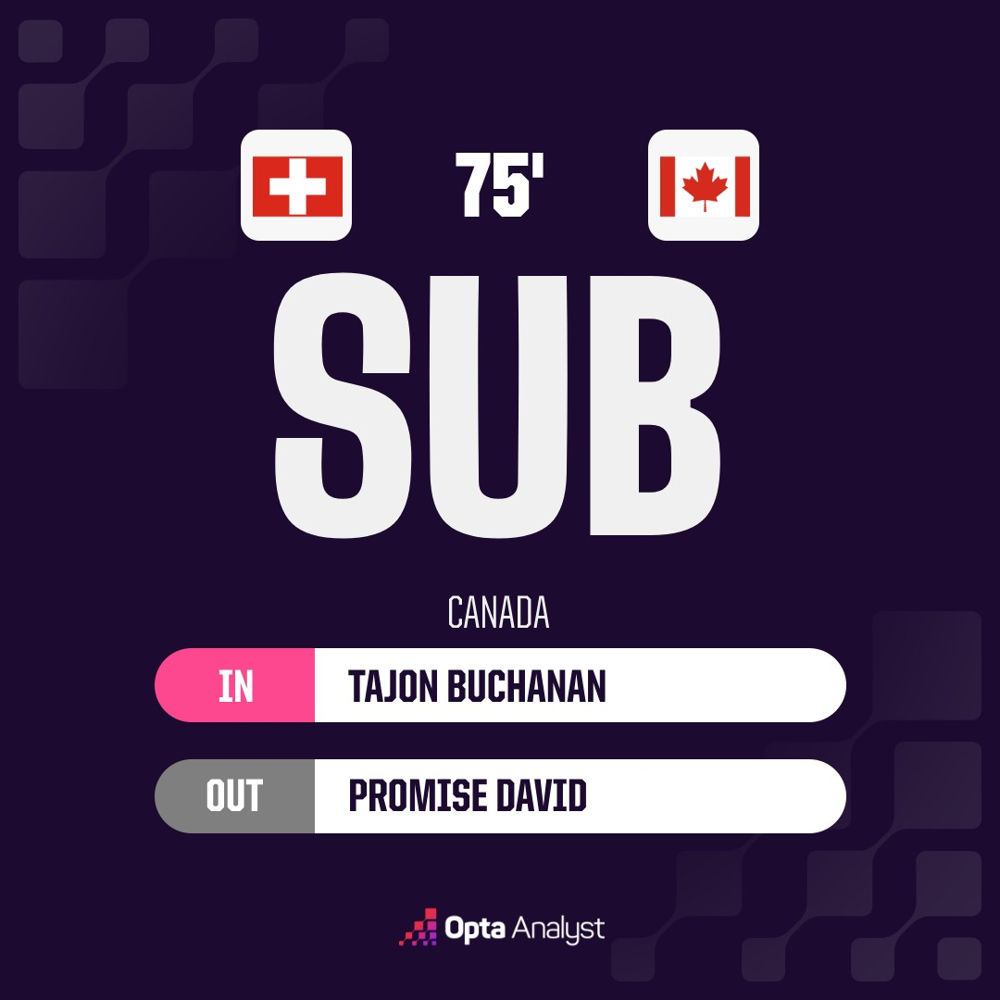
74'
Canada are making a tactical change. Tajon Buchanan is leaving the field and in their place comes Promise David – we will soon see if this switch has the desired impact.
74'
A substitution for Switzerland sees Luca Jaquez replaced by Silvan Widmer. There does not appear to be any obvious sign of an injury, so that is a tactical switch.
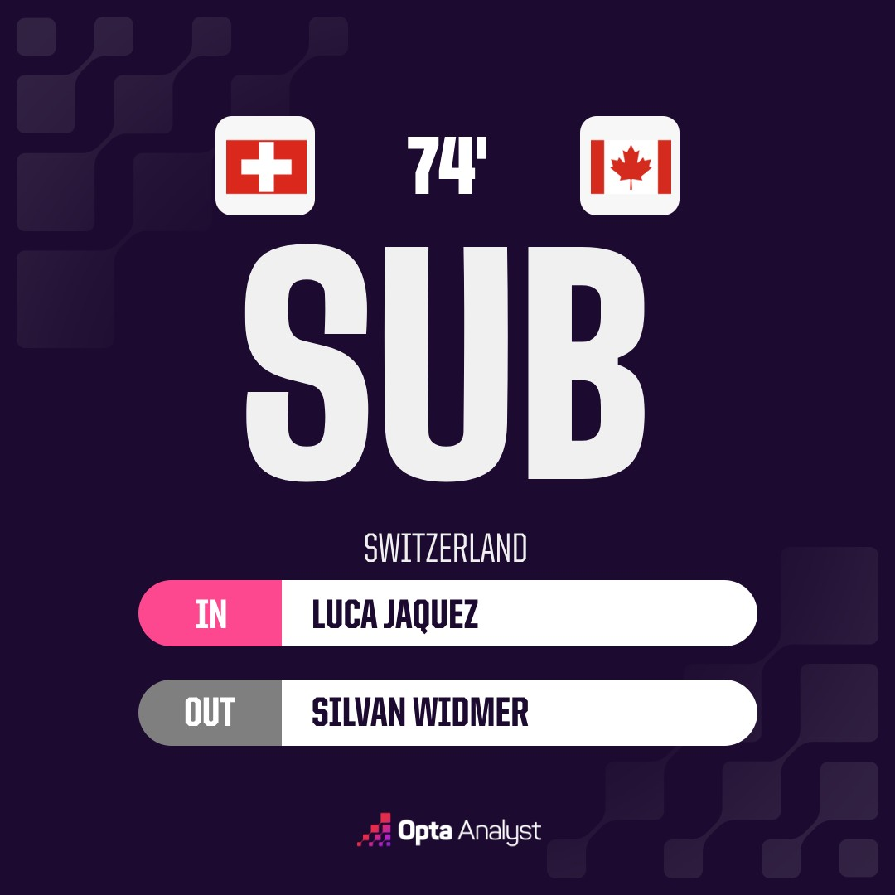
74'
The Switzerland manager is looking to the substitutes’ bench, bringing on Michel Aebischer in place of Djibril Sow. Will the change make a difference? Let’s find out!
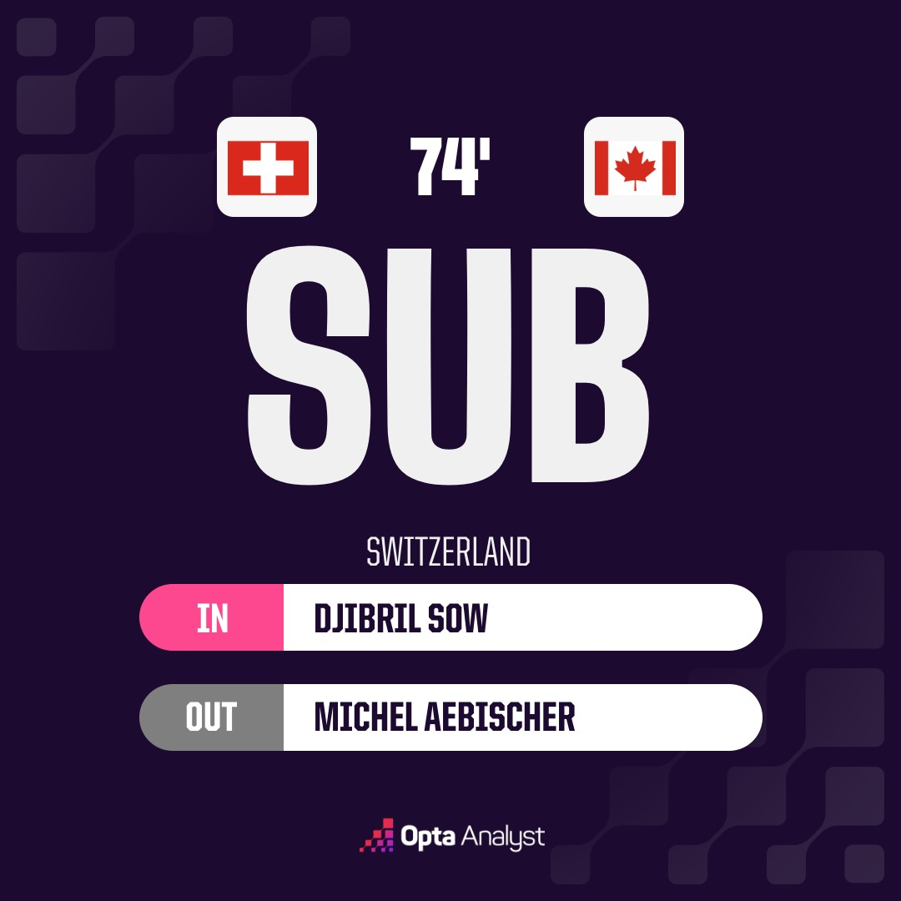
73'
Canada have had plenty of the ball in the last 15 minutes, with 79.34% possession compared to just 20.66 % for their opponents. However, there’s not been any goal to come from that possessional dominance just yet.
71'
A rash challenge from Alistair Johnston, who sends Ricardo Rodríguez tumbling, giving Switzerland a free-kick. It is not in a threatening position, but it gives them a chance to get back on the ball.
70'
It’s backs to the wall now — Switzerland throwing everything into defending their advantage, with a flurry of crucial interventions.
68'
Corner now for Canada, as they see a shot from Jonathan David deflected out of play for a set-piece. Switzerland have some defending to do, here. Could this result in a big opportunity?
66'
With 65 minutes gone, it is Switzerland who lead the shot count, with 6 to Canada’s 7. Switzerland have got 4 of those on target, while Canada have managed to get 3 on target.
64'
Free-kick! A foul from Luc De Fougerolles on Breel Embolo. It is well away from Canada’s goal, so it is unlikely to result in a chance for Switzerland.
64'
It’s backs to the wall now — Switzerland throwing everything into defending their advantage, with a flurry of crucial interventions.
64'
A free-kick to Canada, as Remo Freuler goes in and fouls Richie Laryea. However, Switzerland will not mind giving one away in this area too much, with plenty of distance to their goal.
63'
A free-kick to Switzerland, as Nathan Saliba goes in and fouls Granit Xhaka. However, Canada will not mind giving one away in this area too much, with plenty of distance to their goal.
61'
Canada are racking up corners and free-kicks - they’re starting to dominate in dangerous areas.
61'
Switzerland have a corner to defend now after Ricardo Rodríguez diverts an attempt from Derek Cornelius out of play. Can Canada take this chance to get a good delivery in and really test their opponent’s defence?
61'
Shot blocked! Liam Millar unleashes an attempt at goal, but the ball does not reach its target thanks to Remo Freuler, who makes a solid block to stem the danger – for now.
59'
A free-kick to Canada, as Breel Embolo goes in and fouls Tajon Buchanan. However, Switzerland will not mind giving one away in this area too much, with plenty of distance to their goal.
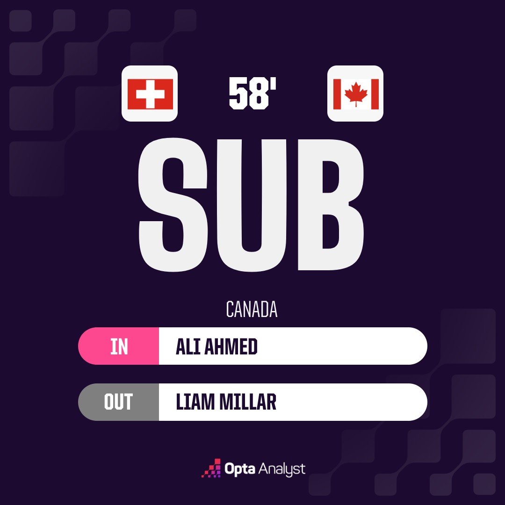
58'
Substitution! Liam Millar replaces Ali Ahmed for Canada as the manager shuffles the pack. Can Liam Millar make an impression as this match continues?
58'
The Canada manager is looking to the substitutes’ bench, bringing on Tani Oluwaseyi in place of Cyle Larin. Will the change make a difference? Let’s find out!
58'
Canada are making a tactical change. Mathieu Choinière is leaving the field and in their place comes Stephen Eustaquio – we will soon see if this switch has the desired impact.
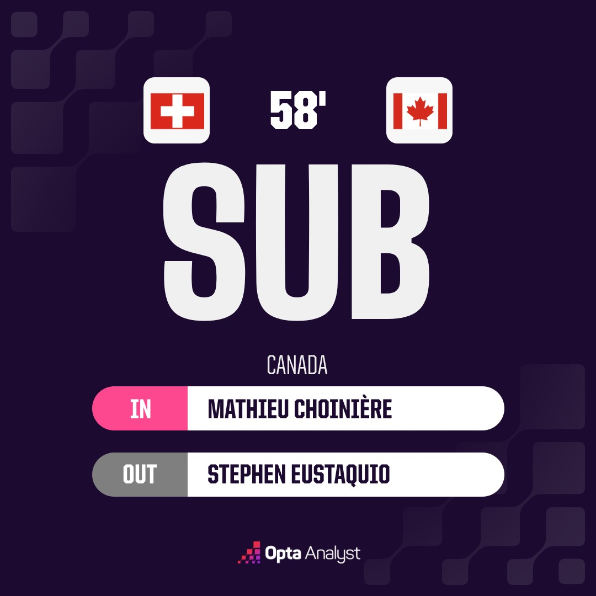
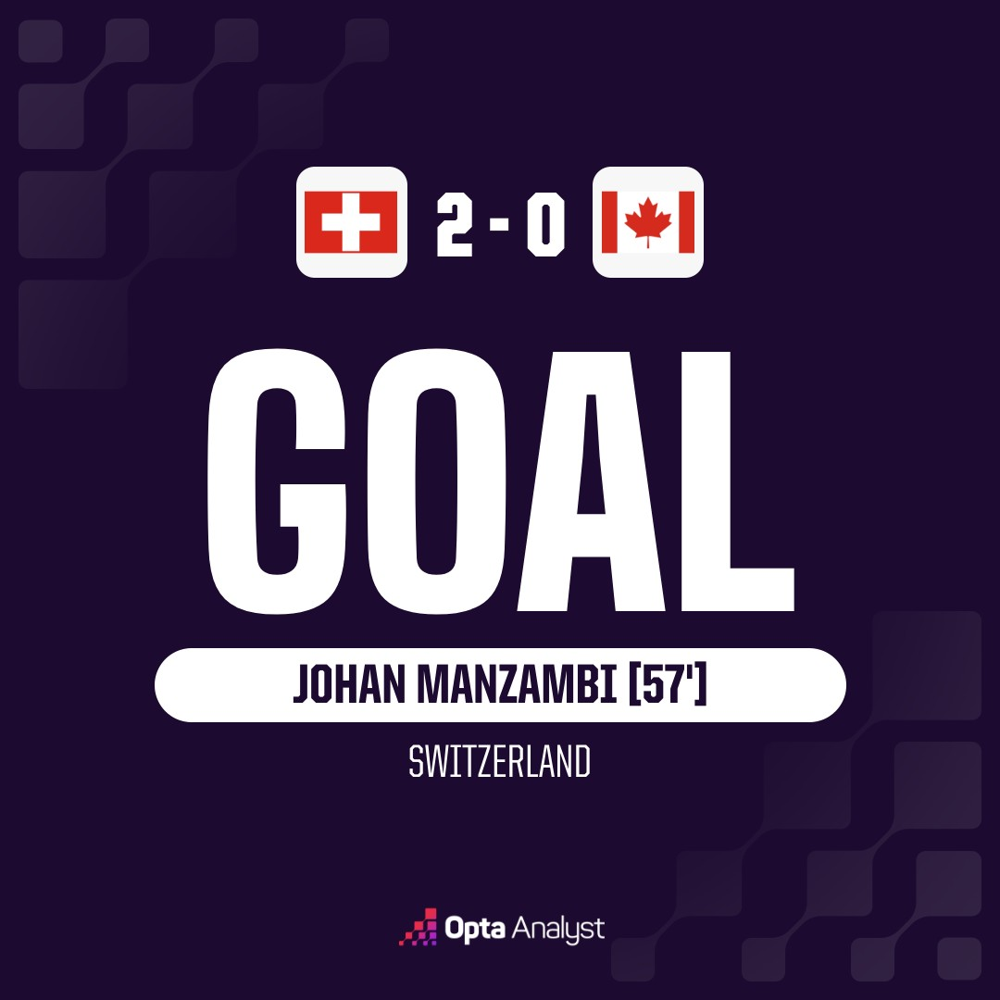
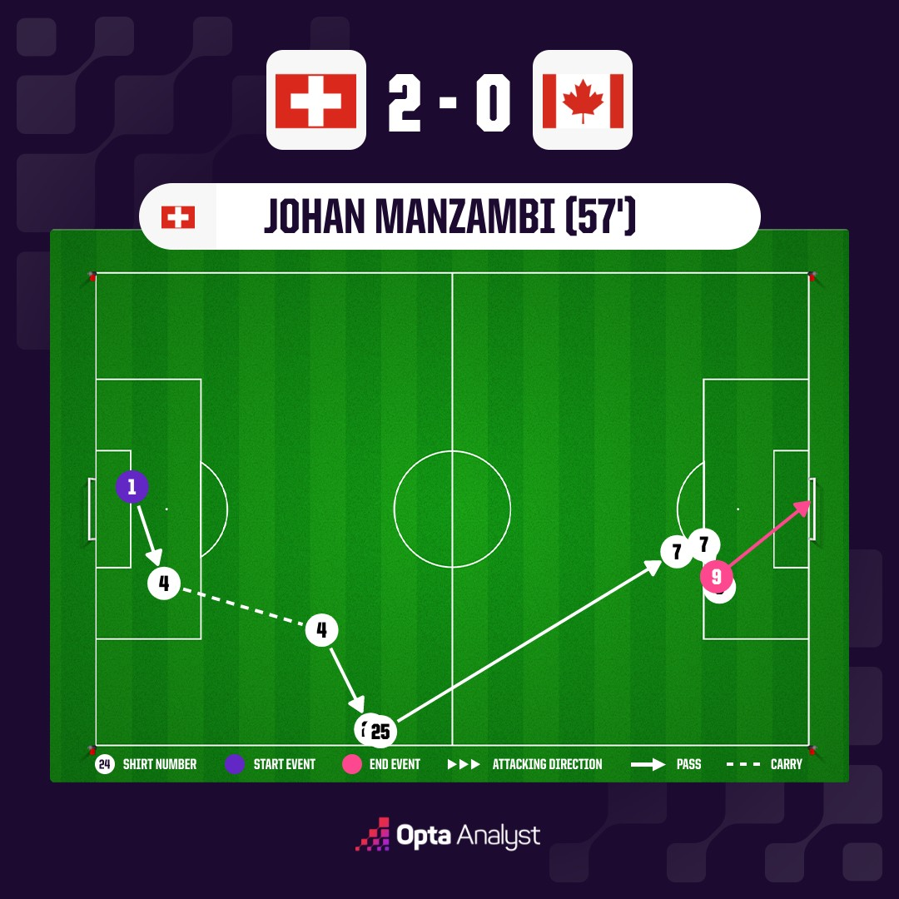
57'
Breel Embolo has assisted his second goal in the 2026 FIFA World Cup.
57'
Johan Manzambi has scored his third goal of the 2025 FIFA World Cup this edition, more than any other Switzerland player.
57'
GOAL! Johan Manzambi scores, and Switzerland are now well in front – surely they will go on and see this one out now? It seems a long way back for Canada, with Switzerland well in control of this match.
55'
Johan Manzambi goes in on Derek Cornelius and concedes a foul. The free-kick is not in a particularly dangerous area from Switzerland’s viewpoint, though.
51'
A rash challenge from Rubén Vargas, who sends Alistair Johnston tumbling, giving Canada a free-kick. It is not in a threatening position, but it gives them a chance to get back on the ball.
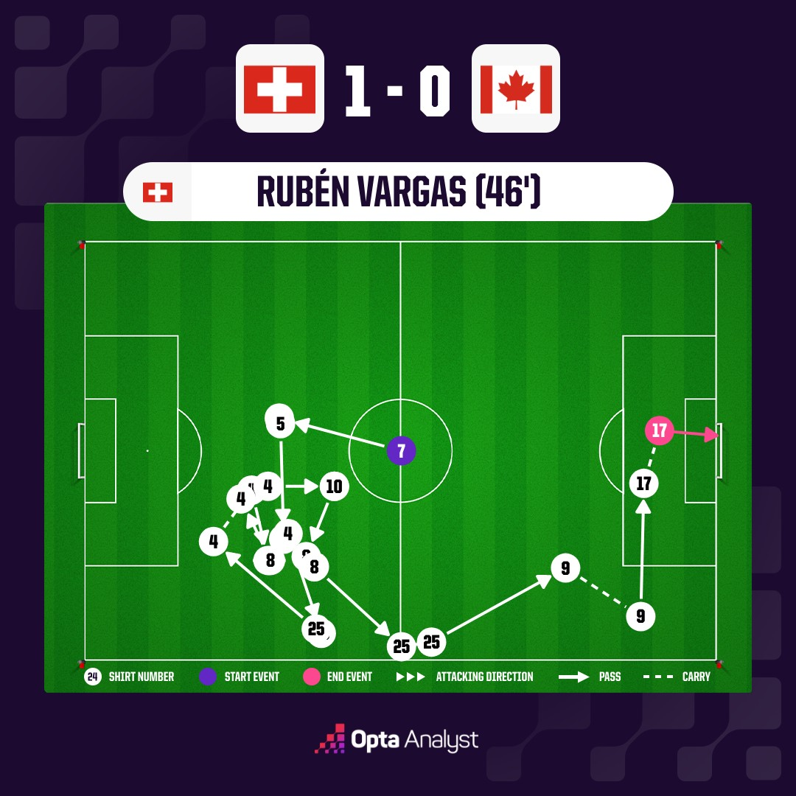
46'
Johan Manzambi has assisted his first goal in the 2026 FIFA World Cup.
46'
Switzerland have avoided defeat in their last 11 matches when scoring first in the FIFA World Cup, since a 1-2 loss to Spain on 15th July 1966.
46'
Rubén Vargas has scored his second goal in the 2026 FIFA World Cup.
46'
GOAL! The drama continues as Switzerland take the lead, courtesy of a goal from Rubén Vargas. There is still plenty of time remaining for more potential twists and turns, but as things stand Switzerland are on track for victory.
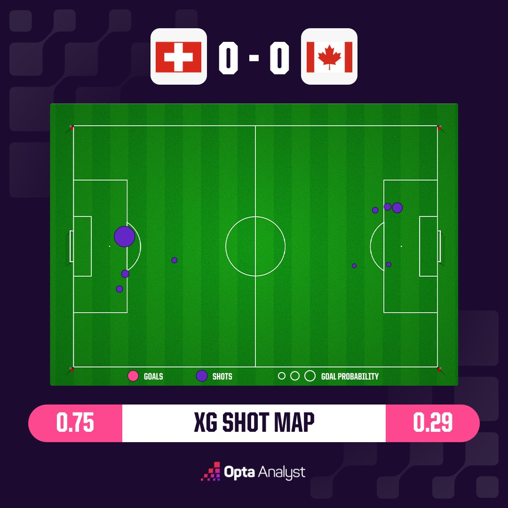
45+5'
Half-time! We reach the interval with the score level at 0-0 between Switzerland and Canada. Will we see a winner in the second half?
45+4'
Breel Embolo goes in on Jonathan David and concedes a foul. The free-kick is not in a particularly dangerous area from Switzerland’s viewpoint, though.
44'
No luck! Jonathan David takes on a shot that, had they got it right, might have been set to test the goalkeeper, but instead it is sent off target and Switzerland come away unscathed.
43'
Rubén Vargas goes in on Luc De Fougerolles and concedes a foul. The free-kick is not in a particularly dangerous area from Switzerland’s viewpoint, though.
41'
CORNER! The pressure is building for Canada as they win a set-piece after Ali Ahmed's attempt is blocked by Gregor Kobel and diverted out of play.
40'
No luck! Alistair Johnston takes on a shot that, had they got it right, might have been set to test the goalkeeper, but instead it is sent off target and Switzerland come away unscathed.
39'
Can Canada make this chance count? They have won a free-kick in a threatening position after a foul from Remo Freuler on Ali Ahmed. Will Switzerland's defence be tested here?
38'
There is plenty of possession for Switzerland, with 76.15% compared to Canada 23.85% in the last 15 minutes. However, Switzerland have not been able to turn that dominance of the ball into a goal.
38'
A chance goes begging as Granit Xhaka gets off a shot that does not hit the target. They might have done better with that one, but instead it is a goal-kick to Canada.
37'
A free-kick in a dangerous position now for Switzerland, after a foul from Richie Laryea on Breel Embolo. Can Switzerland make Canada pay for that rashness from Richie Laryea?
34'
That’s offside! A switched-on defensive line from Switzerland, as they step up at the right time to catch Cyle Larin offside, and the assistant referee’s flag is up.
33'
Switzerland are having plenty of the ball, with 65.63% possession in the last 15 minutes. However, they have been unable to transfer that possessional dominance into a goal during that spell, and are not even generating shooting opportunities, so Canada may not be unduly alarmed.
33'
SAVED! Good work from Gregor Kobel, who stands firm to deny Cyle Larin, who managed to get a shot away from inside the Switzerland area.
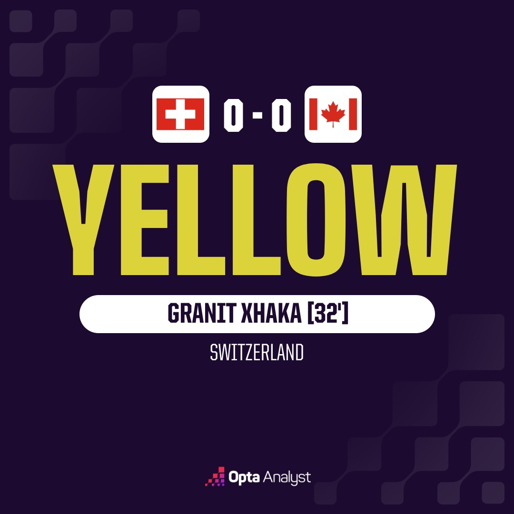
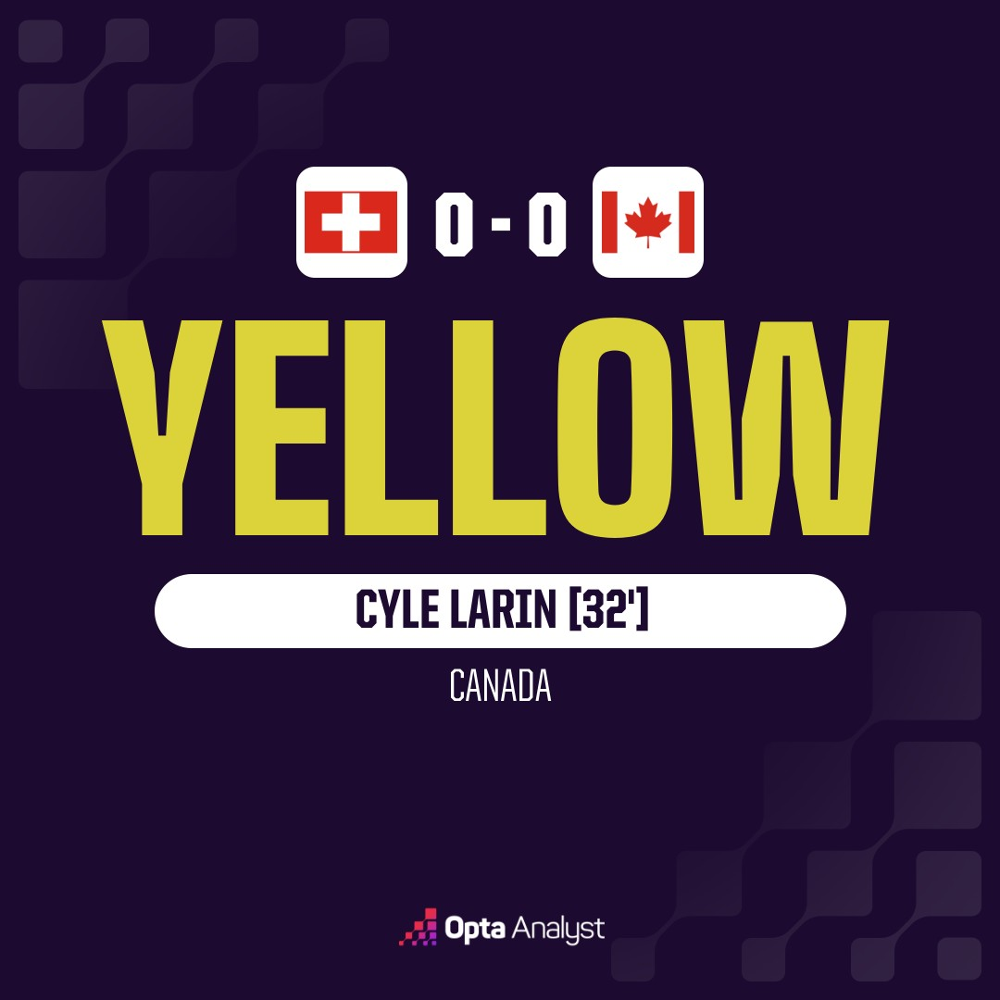
32'
That is a booking for Granit Xhaka, who has received their first yellow card. They are not happy with the decision, but it is done now, and they will have to be careful for the rest of this game.
32'
A yellow card for Canada's Cyle Larin. They will have to walk a tightrope for the rest of this match, and Switzerland will likely look to target them and draw a second bookable offence.
30'
Mathieu Choinière goes in on Granit Xhaka and concedes a foul. The free-kick is not in a particularly dangerous area from Canada’s viewpoint, though.
30'
A lull in this match, as the teams prob and probe, but without much success. It has been 10 minutes since there was an attempt from either side, though Switzerland are seeing more of the ball, with 66 per cent possession to Canada’s 34 per cent during that time.
22'
The Canada defence steps up in time and there is a frustration for Johan Manzambi, who thought they were through until the flag goes up to signal offside.
21'
Free-kick! A foul from Breel Embolo on Richie Laryea. It is well away from Switzerland’s goal, so it is unlikely to result in a chance for Canada.
20'
SAVED! Good work from Gregor Kobel, who stands firm to deny Luc De Fougerolles, who managed to get a shot away from inside the Switzerland area.
19'
Can Canada make this chance count? They have won a free-kick in a threatening position after a foul from Ricardo Rodríguez on Tajon Buchanan. Will Switzerland's defence be tested here?
18'
Free-kick! A foul from Rubén Vargas on Mathieu Choinière. It is well away from Switzerland’s goal, so it is unlikely to result in a chance for Canada.
17'
SAVED! Good work from Maxime Crépeau, who stands firm to deny Breel Embolo, who managed to get a shot away from inside the Canada area.
16'
We're witnessing a tactical stalemate, with neither side willing to show their hand.
16'
A free-kick to Canada, as Luca Jaquez goes in and fouls Richie Laryea. However, Switzerland will not mind giving one away in this area too much, with plenty of distance to their goal.
16'
Plenty of the ball in the last quarter-of-an-hour of this match for Switzerland, but still Canada stand firm, despite having had only 23.33% of the ball in that period. Can Switzerland make their possessional dominance count?
15'
Ricardo Rodríguez goes in on Tajon Buchanan and concedes a foul. The free-kick is not in a particularly dangerous area from Switzerland’s viewpoint, though.
13'
Offside! Cyle Larin thought they were through on goal, but the Switzerland defence stepped up in time to catch them offside, and the assistant referee puts their flag up.
12'
That’s offside! A switched-on defensive line from Switzerland, as they step up at the right time to catch Cyle Larin offside, and the assistant referee’s flag is up.
11'
A rash challenge from Luca Jaquez, who sends Richie Laryea tumbling, giving Canada a free-kick. It is not in a threatening position, but it gives them a chance to get back on the ball.
11'
WHAT A MISS! Oh dear, oh dear, that is an awful attempt from Johan Manzambi, as a huge chance for Switzerland to score the goal they need goes begging. What a let off for Canada, though. They will have to defend better than that from here on out!
11'
HUGE CHANCE GOES BEGGING! What a miss that is from Breel Embolo, who looked all set to score a goal that their team need, but instead fails to direct their attempt into the back of the net. That was a big, big opportunity for Switzerland.
11'
Neither team has had a shot in the past 10 minutes, as this match just enters something of a down period. Switzerland have seen more of the ball, with 75 per cent possession, but Canada are keeping them away from goal. There is still a chance the match will spark into life, though.
10'
A free-kick to Switzerland, as Luc De Fougerolles goes in and fouls Johan Manzambi. However, Canada will not mind giving one away in this area too much, with plenty of distance to their goal.
7'
A foul from Derek Cornelius on Breel Embolo sees Switzerland win a free-kick, but it is not in a dangerous position, so Canada should be confident they can defend it easily enough.
7'
It’s been tight so far, and Switzerland are making sure it stays that way with strong defensive discipline and well-timed clearances.
5'
It is a corner now to Switzerland, with Canada somewhat hanging on here as they look to hold out for a positive result. Can Switzerland make something of this set-piece opportunity?
4'
Richie Laryea goes in on Luca Jaquez and concedes a foul. The free-kick is not in a particularly dangerous area from Canada’s viewpoint, though.
3'
Foul! A free-kick now in a dangerous area for Canada, after Ali Ahmed is fouled by Luca Jaquez. Can Canada make the most of this opportunity?
2'
A rash challenge from Djibril Sow, who sends Richie Laryea tumbling, giving Canada a free-kick. It is not in a threatening position, but it gives them a chance to get back on the ball.
1'
And we are off! Strap in, folks, for this mouthwatering encounter between Canada and Switzerland at BC Place Vancouver.
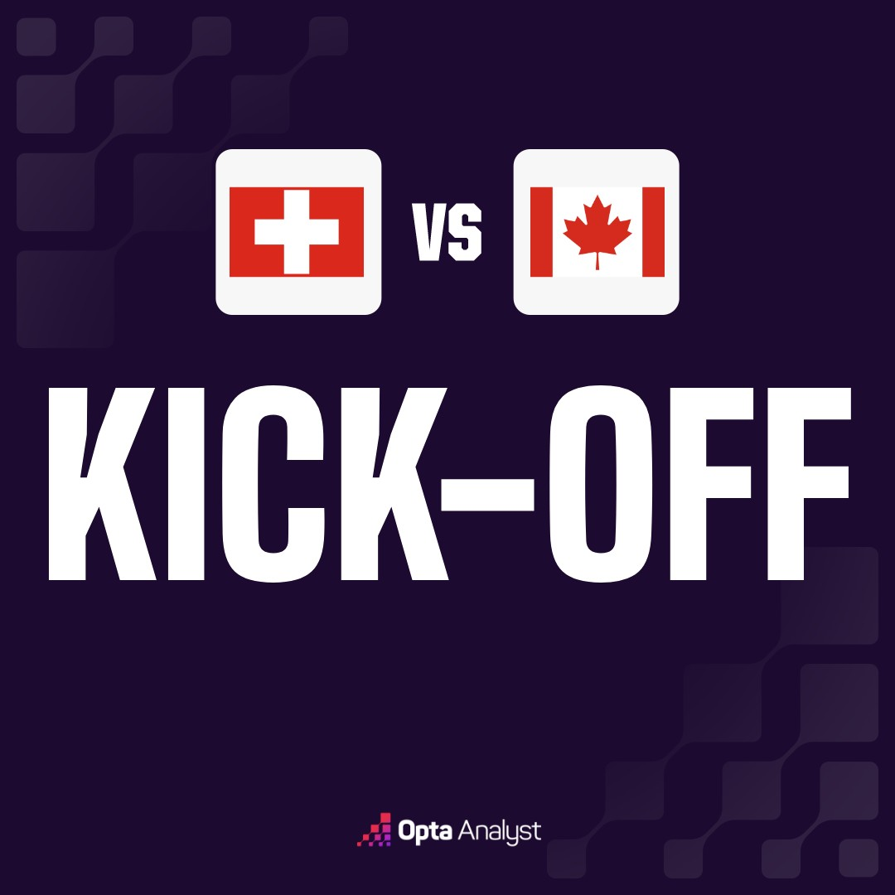
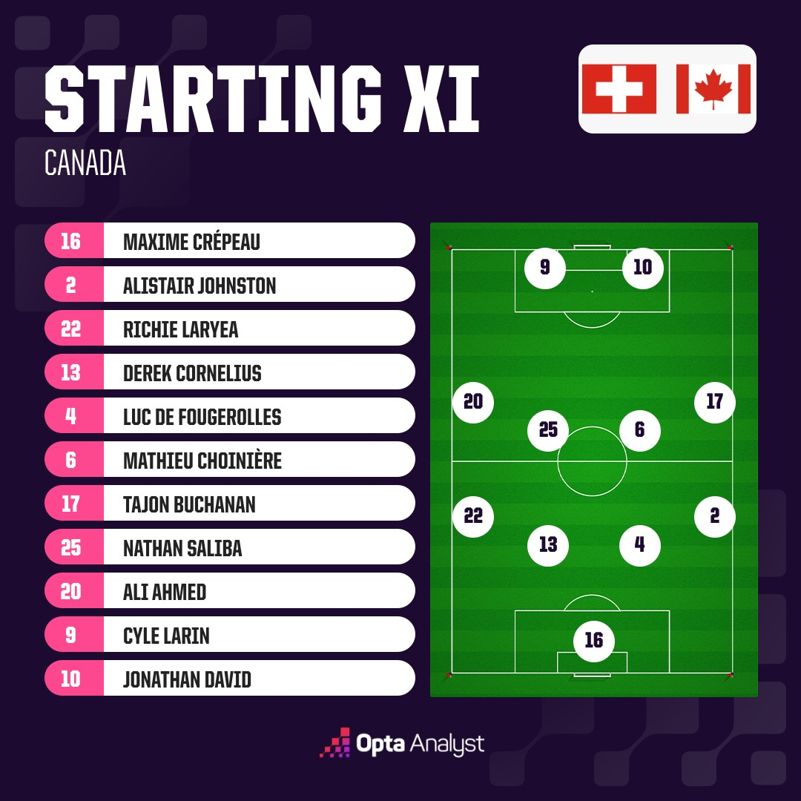
Ricardo Rodríguez is making his 15th appearance in the FIFA World Cup.
Granit Xhaka is making his 15th appearance in the FIFA World Cup.
J. Manzambi has scored in the last 2 home games for Switzerland
There have been fewer than 3 goals scored in total in each of Canada's last 6 away games
Switzerland have won their last 3 games when J. Manzambi has scored
Switzerland play Canada on Wednesday at BC Place Vancouver for a FIFA World Cup group stage match between two in-form teams looking to secure a place in the Round of 32.
Switzerland earned a first competition win this season with a 4-1 victory over Bosnia-Herzegovina in their last group stage match on June 18. Johan Manzambi netted a brace to lead the scoring. They are undefeated in their last five games in all competitions. In six games this year, they have two wins, three draws, and one loss.
Canada won for the first time in the competition this year in their last group stage game on June 18, beating Qatar 6-0 at BC Place Vancouver, improving their unbeaten streak to 10. Jonathan David netted a hat-trick to lead the scoring.
Canada and Switzerland are first and second in the group, respectively, level on four points. Both sides are currently in position for a place in the Round of 32.
Elsewhere in the group, Bosnia-Herzegovina are third on one point and still in contention for a round of 32 place. Qatar are in danger of elimination, sitting fourth on one point.
The previous time the clubs faced each other it was Canada who claimed a 3-1 success in May 2002.
Manzambi has caught the eye for Switzerland in World Cup play. The midfielder is their top scorer with two goals, which is tied for the fourth highest in the competition, one of those having been the critical first of the match. Canada have been led by David, who has scored on three occasions in this World Cup campaign. He is tied as the competition's top scorer.
In their last six matches in all competitions, Switzerland have won two, drawn three and lost one. The Swiss side scored 13 and conceded eight in that stretch, scoring first in five of the six contests. A majority of their goals (seven) came in the first half, while their opponents netted two times in the first 45 minutes. The Canadian side have won two and drawn four in their last six. The Canadian side scored 12 and conceded four in that stretch, netting first in three of the six. They had four goals in the first half, while their opponents netted three times before the break.
-
General
Possession 55.3% 55.29844.70244.7% Possession lost in defensive half 31 312828 Possession lost in middle third 57 575252 Duels 101 101104104 Duels success rate 50.5% 50.49547.11547.1% Aerial duels 29 292929 Aerial duels won 55.2% 55.17244.82844.8% Successful dribbles 6 688 Fouls won 13 131919 Offsides 1 133 Corner awarded 2 277 -
Distribution
Passes 443 443339339 Long passes 45 454343 Long passes proportion (%) 10.2% 10.15812.68412.7% Passing accuracy 83.3% 83.29679.94179.9% Passes in opponents' half 181 181203203 Passing accuracy in opponents' half (%) 65.7% 65.74674.87774.9% Total passes in the final third 76 76105105 Passing accuracy in final third (%) 50.0% 5067.61967.6% Forward passes 290 290228228 Forward passes (%) 65.5% 65.46367.25767.3% Through balls 4 411 Final third entries 48 486060 Penalty area entries 19 194444 Total open play crosses 4 41717 Crosses 6 62626 Crossing accuracy 16.7% 16.66723.07723.1% -
Attack
Goals 2 211 Shots 6 61313 Shots on target 4 477 Blocked shots 1 133 Headed shots 0 044 Shots outside the box 1 111 Shots inside the box 5 51212 Shots accuracy excluding blocked shots 80.0% 807070.0% Shooting accuracy 66.7% 66.66753.84653.8% Key Passes 4 41212 -
Defence
Tackles 16 1699 Tackles success rate 43.8% 43.7555.55655.6% Clearances 44 441919 Interceptions 4 41313 Recoveries 35 354040 Attacking third recovery 3 322 Defensive third recovery 17 171919 Midfield third recovery 15 151919 Recoveries in attacking half (%) 8.6% 8.57155.0% -
Discipline
Fouls conceded 19 191313 Yellow cards 1 122 Red cards 0 000